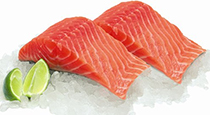
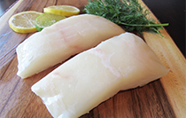
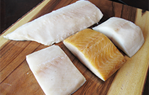

All of our products are 100% wild and harvested from the pristine coastal waters of British Columbia. We provide sustainable seafood that is flash frozen at sea ensuring premium quality products. Our products are Ocean Wise® approved which means they are recommended by the Vancouver Aquarium as an ocean friendly seafood choice.
Wild Pacific salmon
The five species of wild Pacific salmon – chinook, coho, sockeye, keta and pink – vary in size, colour, texture, and fat content but all share a superb taste, high protein content, and low saturated fat and high polyunsaturated omega-3 fatty acid content from their diet of the rich ocean nutrients of the North Pacific.
read more >>

Wild Albacore Tuna
Wild Albacore Tuna is noted for its white, firm meat and delicate flavour. They are 3-4 year old fish harvested by hook and line. Albacore tuna has a light pink flesh that turns white when cooked. It has a delicate flavour and is rich in minerals, Omega-3 fatty acids (2.1 grams per 100 grams) and high in total fat (7.2 grams per 100 grams).
read more >>

Wild Lingcod
Wild Lingcod is a good source of protein, low in saturated fat with a moist sweet flesh. It is unique to the West coast of North America with an abundance off the Coast of British Columbia. A mature lingcod can reach up to 5 feet long and has a distinct large mouth and numerous sharp teeth. Its mild flesh is moist and is often preferred over halibut. (Total fat 0.6 grams per 100 grams).
read more >>

Pacific Halibut
Pacific halibut is prized for the delicate flavor and firm texture of its sparkling white, almost translucent flesh. The lean white meat of the Pacific halibut is high in protein and low in sodium, fat and calories, and with a minimum of bones, halibut as whole fish, fillets or portions adapts well to baking, broiling, frying, poaching or barbecuing.
read more >>

Wild Sablefish
Wild Canadian sablefish has a rich sweet flavour with large sleek white flakes. Its unique taste and texture have made it a favourite among the world’s top chefs who value its high oil content and creative versatility. Smoked fish connoisseurs will love smoked sablefish’s deep nutty flavour, which has become widely sought after in major culinary centres around the globe. And wild Canadian sablefish is not only delicious, it is a naturally healthy choice this is high in protein and Omega-3 fatty acids and low in carbohydrates.
read more >>

Smoked Products
All of our smoked products are hand pack, hand filleted and smoked locally.There are few species of wild Pacific salmon – chinook, sockeye, keta and pink – vary in size, colour, texture, and fat content but all share a superb taste, high protein content, and low saturated fat and high polyunsaturated omega-3 fatty acid content from their diet of the rich ocean nutrients of the North Pacific.
read more >>

Canned Products
All of our cans are hand pack, hand filleted and canned locally. Fresh sockeye and sustainable Albacore Tuna is used for our smoked and non-smoked products.
read more >>